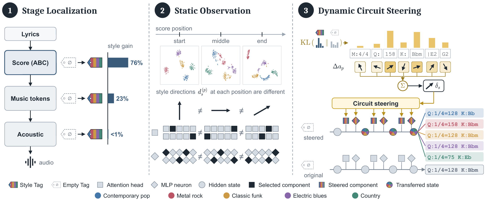
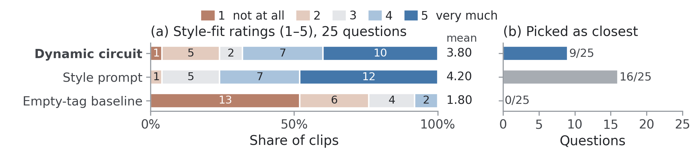
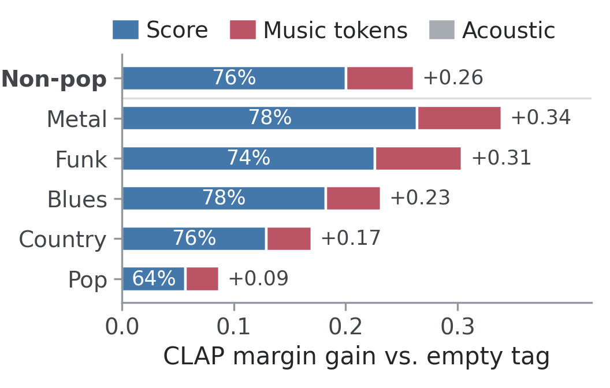
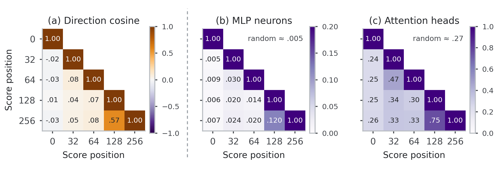
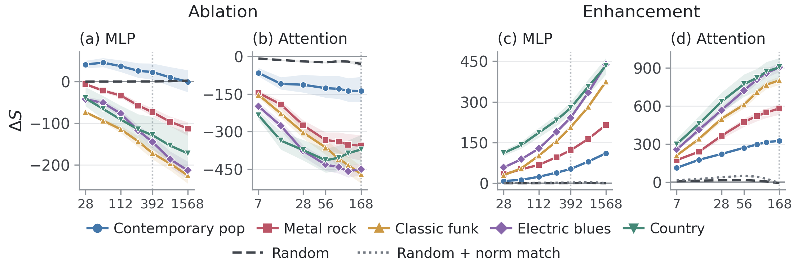
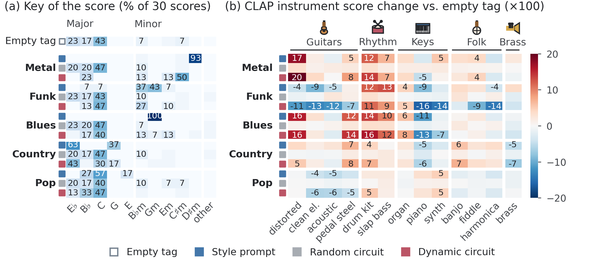

Demo page · ICLR 2027 submission
Music Circuit: Tracing and Controlling Style Dynamics in Large Music Generation Model
We trace how musical style is represented inside YuE2. Style forms mainly while the model writes its score, and it is carried by directions and components that change from token to token. We merge those changes into one KL-weighted direction per style and trace the MLP neurons and attention heads that drive it into a sparse circuit.
Steering that circuit writes the same lyrics in five styles without any style text. This page lets you hear the clips and see the scores the model wrote for them.

Listen: one lyric, five styles, no style text
Every clip on a page uses the same lyric and the same seed pair. Under each player is the score YuE2 wrote before rendering the audio: the vocal melody in color, the instrumental melody in gray, bar lines and section marks behind them. Chips show the score header; a colored chip differs from the empty-tag score. Click a piano roll to play from that point.
Loading examples…
Results on the test set
Hits per style out of 30 (15 lyrics, two seed pairs). A CLAP hit needs a complete generation whose target style scores strictly highest among the five style descriptions. Gemini 3.6 Flash picks one of six options blind. Truncated generations count as misses.

How the circuit is found
Three steps, each answering one question about style inside the model. Figures are from the paper.
Style forms while the score is written
Replacing the empty tag with the style tag in one generation stage at a time shows that the score-planning stage accounts for about three quarters of the style effect, the music-token stage for one quarter, and acoustic rendering for almost none.

Style is dynamic across score positions
The five styles separate at every score position, and each position's direction is reproducible. The directions, and the neurons and heads selected for them, barely overlap between positions: style is not one fixed vector but a representation that changes as the score is written.

A sparse circuit causally controls style
Weighting each step by the KL divergence between the style-tag and empty-tag predictions gives one direction per style. Zeroing only 0.23% of the MLP neurons that drive it moves the output about 80% as far from the style-tag output as removing the tag. Random components of the same number barely matter.

Keys and instruments move the way the prompt moves them
The circuit shifts keys toward each style's typical key (D♯m or C♯m for metal, minor keys for funk and blues, major keys for country) and changes the instrumentation the way the prompt does: distorted guitar and heavy drums for metal, slap bass for funk, pedal steel and banjo for country.
